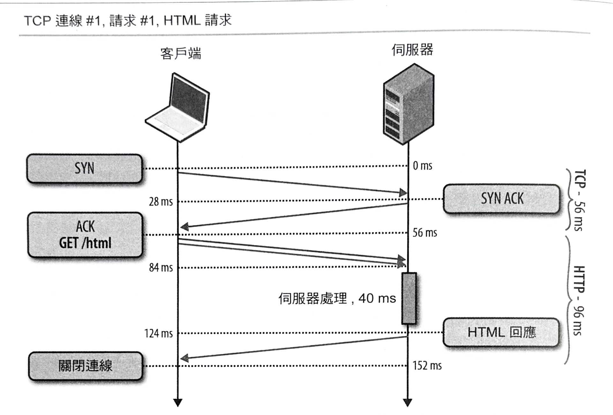
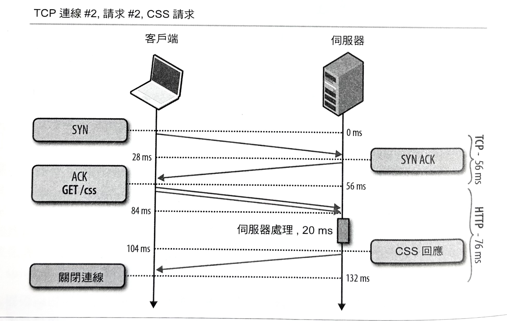
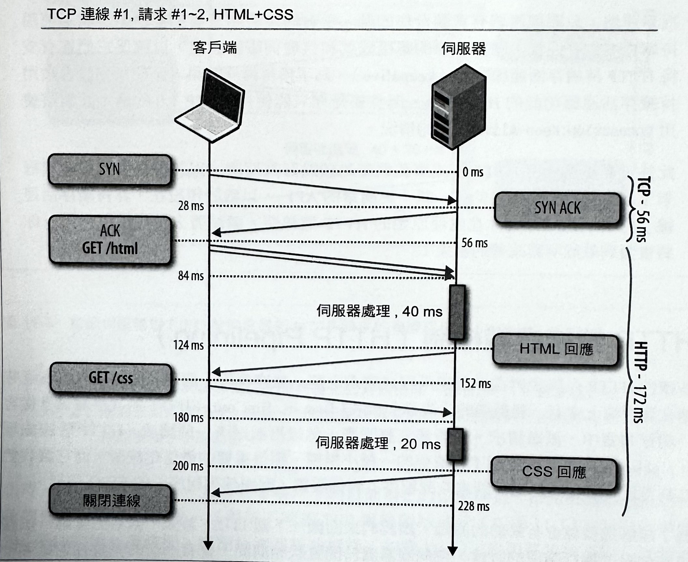
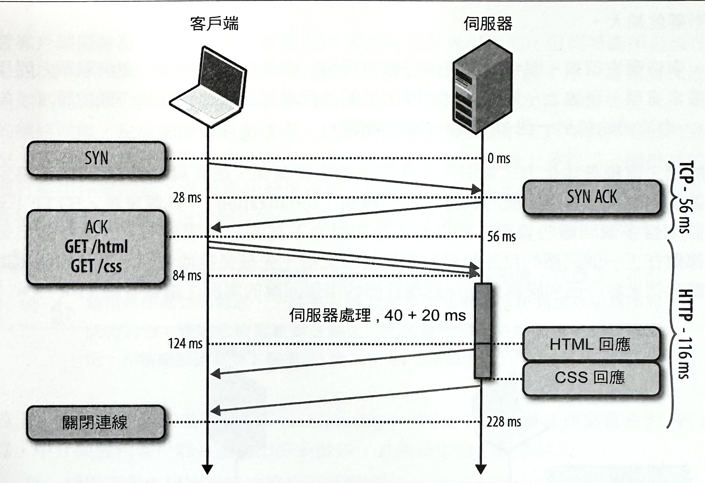
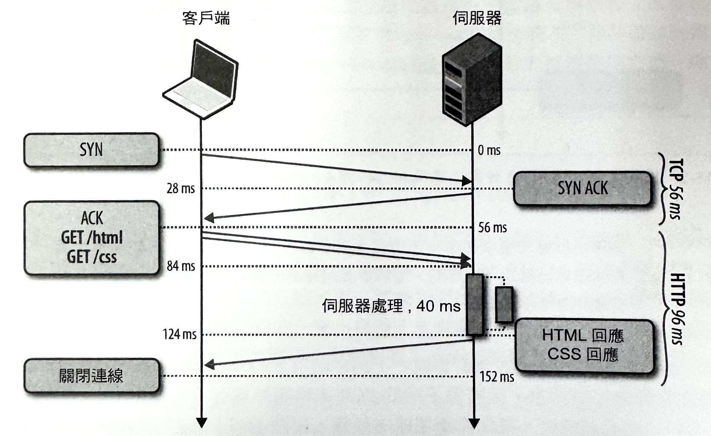
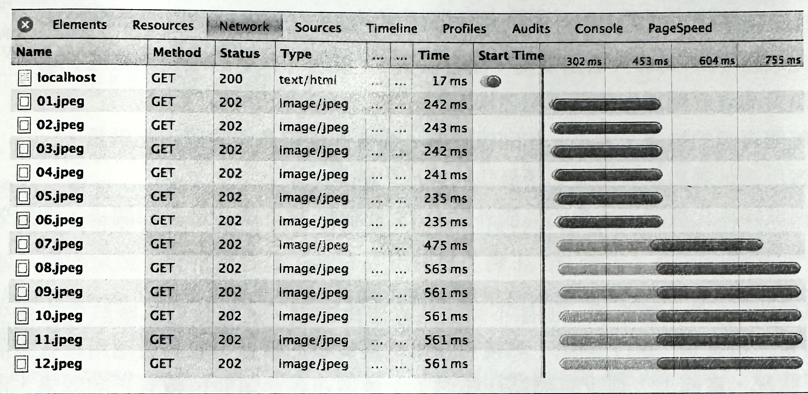

1-18-12 HTTP-1.x
對 HTTP 1.0 的最佳化策略的討論是很簡單的：所有 HTTP 1.0 的部署環境應該都要被升級為 HTTP 1.1；這樣就告一段落了。
HTTP 的效能提升，是 HTTP 1.1 工作團隊的重要設計目標之一，並且標準會採用許多重要的效能強化和特性。幾個比較為人所知的部分包括以下幾項：
- 持久連接（persistent connection），以允許連線被重複使用。
- 切塊傳輸編碼處理（chunked transfer encoding），以允許回應串流處理。
- 請求管線處理（request pipelining）以允許同時進行請求處理作業。
- 位元組等級的服務方式，以允許範圍內的資源請求。
- 改良以及更好的特定快取機制。
這份列表並不完整，而且關於每一個 HTTP 1.1 強化部分的技術細節的完整討論，需要用到一整本獨立專書的篇幅才夠。再一次地，推薦大家去參考一下 David Gourley 和 Brian Totty 所撰寫的《HTTP: The Definitive Guide》（HTTP： 權威指南）一書。同樣地，另一本由 Steve Souder 所撰寫的好書《High Performance Web Sites》（高效率網站），還對 14 種規則類型提供了很棒的建議，而且其中有一半的篇幅都在談網路最佳化方式：
-
減少 DNS 查詢
每個主機名稱解析程序，都需要一次的網路往返作業，而這會讓請求增加延遲，並且當查詢作業還在進行時，會先把請求給阻擋下來。
-
讓 HTTP 請求變得更少
請求速度再怎麼快，也比不上完全不做任何請求：簡單來說，就是剔除掉頁面上的非必要資源。
-
使用內容傳輸網路（Content Delivery Network, CDN）
就地理上的位置來把資料放置得更接近客戶端，可以大幅降低每個 TCP 連線的網路延遲，並且還可提升吞吐量。
-
加入逾期標頭並設定 ETags
相關資源應該要被進行快取處理，以避免對每個頁面上的相同位元組資料進行重複請求的情況。「逾期標頭」（Expires header）可以被用來指定物件的快取生命週期，讓它可以從使用者的快取當中被直接取得，並完全消除掉 HTTP 請求的部分。ETags（entity tag，實體標籤）和 Last-Modified（最後修改）標頭會提供一個有效的快取重驗（cache revalidation）機制，作為最後更新狀況的一種指紋或時間戳記的有效記錄。
-
素材的 Gzip 壓縮處理
所有的純文字素材都應該在客戶端和伺服器之間的傳輸過程當中，以 Gzip 方式來進行壓縮。在一般狀況下，Gzip 將會減少 60~80% 的檔案大小，而這是你可以很簡單就做到（設定伺服器上的功能旗標），並獲得高度最佳化效果的方式。
-
避免 HTTP 重導情況
HTTP 重導程序（redirect）可能所費不貲，尤其是在它們將客戶端給重新導向不同主機名稱的時候，因為那會引發額外的 DNS 查詢、TCP 連線延遲，以及其他處理成本。
上述的每一項建議，從本書首次在 2007 年出版開始到現在，已經都經過時間的考驗了。那絕非巧合，因為它們全都在強調兩項基本建議：消除與降低不必要的網路延遲，以及將傳輸資料量降到最低程度。這兩者對任何應用程式來說，永遠都是最有效的最佳化方法。
然而，這些卻不見得適用於所有的 HTTP/1.1 功能和最佳慣例。遺憾的是，有些像請求管線機制（pipelining）之類的 HTTP/1.1 功能，會因為缺乏支援，導致效果不彰的狀況，而且其他像是線頭回應阻塞（head-of-line blocking）之類的協定限制，甚至還會更進一步地造成基礎上的破壞狀況。此外，總是極富創意的網頁開發者社群，已經創造並推廣了許多自行研發的最佳化方式：像是網域碎片化（domain sharding）、串聯（concatenation）、圖像動態機制（spriting），以及與其他人之間的內聯機制（inlining）等等。
對於許多網頁開發者來說，這些全都是最實際的最佳化方式：熟悉的、必要的，而且是普遍被接受的。然而，事實上，這些技術應該被看成是：針對 HTTP/1.1 協定裡的現有限制所採用的權宜之計。我們不應該需要去煩惱有關檔案串聯作業、圖片動態處理、網域碎片化作業，或者是素材的內聯程序。然而，「不應該」並不是要採取的一種固執己見的立場態度：這些最佳化方式有它存在的適當理由，而我們目前還是得仰賴它們，直到底層問題能夠在協定的下一個版本當中被加以修正為止。
對 iTunes 使用者傳遞 3 倍的效能改進效果
在 WWDC 2012 的時候，Joshua Graessley 展示了 HTTP 最佳化效益的一個優秀的研究案例：蘋果工程師們看到了，一旦他們在 iTunes 裡頭，透過 HTTP 持續存活連線和管線機制，來重複使用現有的 TCP 連線的話，就能夠在較慢的網路上，對使用者實現一種 300% 的效能提升效果！
顯然，了解 HTTP 的基本運作方式可以獲得很高的效益。更多有關上述最佳化方式的細節分析資訊，請參考在 iTunes 上的 WWDC 歸檔資料，並尋找 Graessley 的演講場次—《Session 706: Networking Best Practices》（議程 706：網路處理最佳慣例）。
持續存活連線的好處
HTTP 1.1 的主要效能改進之一，就是引進了持久（persistent），或持續存活（keepalive）的 HTTP 連線技術—這兩個名稱指的是同一種功能。在《HTTP 1.1：網際網路標準》就已經看過持續存活連線的運作情況了，不過讓我們來說明一下，這項功能為何是我們的效能策略裡的一個重要部分的原因。
為了簡單起見，讓我們先把我們自己限制在只有一個 TCP 連線可用的情況下，來檢驗我們需要去擷取兩個小型資源（每個大小都低於 4 KB）的場合（如圖-1）：這當中有一個 HTML 文件，以及用來支援該文件的 CSS 檔案，而其中的每一個都會佔用一點伺服器的時間（分別是 40 和 20 毫秒）。
圖-1 是假設紐約和倫敦之間的單向「光纖」延遲，就像之前 TCP 連線建立範例當中所使用的那樣，同樣是 28 毫秒（請參考表-1）。
每個 TCP 連線一開始都會先進行一次 TCP 三向交握程序，因此會在客戶端和伺服器之間花掉一個完整的往返延遲。接著，我們將會因為 HTTP 請求和回應的雙向傳播延遲，而至少產生另一次的往返延遲。最後，我們必須加上伺服器的處理時間，以得出每個請求的總花費時間。
圖-1 ：透過個別的 TCP 連線，來擷取 HTML 和 CSS
 我們無法預料伺服器處理時間，因為資源和後端隱藏的狀況都會有所不同，但值得強調的是，透過一個新的 TCP 連線來傳輸一個 HTTP 請求的總花費時間，需要經過兩次網路往返作業：一次用來進行交握程序，而另一次則是用來進行請求/回應循環。這是在所有非持久性 HTTP 議程上，所需要花費的固定成本。
伺服器處理時間越快，每個網路請求的固定延遲成本的影響就越大！若要證明這個說法，可以改變上述範例裡的往返和伺服器處理時間來試試看。
因此，一個簡單的最佳化方式，就是重複使用底層連線！加入 HTTP 持續存活連線（keepalive）功能（如圖 11-2）的支援能力，就可以讓我們消除第二次的 TCP 三向交握作業、略過另一次 TCP 緩步啟動的往返作業，並節省掉一個完整的網路往返延遲。
圖 11-2 ：以持續存活連線方式來擷取 HTML 和 CSS
在我們搭配兩個請求的範例當中，總計的節省情況下是只會有唯一的一次往返延遲，但現在讓我們來思考一下，一般搭配著一個單一 TCP 連線和 N 個 HTTP 請求時的情況：
- 不搭配持續存活連線的話，每個請求都將會產生兩次的往返延遲。
- 搭配持續存活連線的話，第一個請求會產生兩次往返，而所有的後續請求就會產生一次往返延遲。
當啟用持續存活連線功能時，對於 N 個請求所節省的總延遲時間是（N-1）× RTT。最後，回想起 N 的平均值是 90 個資源以上（請參考《剖析最新網頁應用程式的結構》），我們很快地就可以節省掉以秒來計的潛在延遲時間！毫無疑問地，持續性 HTTP 是每個網頁應用程式的一項重要的最佳化方式。
客戶端和伺服器上的連線重複使用機制
很幸運地，只要伺服器有意願合作的話，所有的最新瀏覽器都會自動地試圖使用持續性 HTTP
連線。請檢查你的應用程式和代理伺服器設定，以確保它們都有支持 HTTP
持續存活連線功能（keepalive）。為了獲得最佳效果，請使用預設會啟用持續存活連線功能的 HTTP
1.1，而且要是你只能使用 HTTP 1.0 的話，就觀察使用
Connection: Keep-Alive
標頭的情況。
此外，要注意一下 HTTP 程式庫和框架的預設行為反應，因為有很多程式庫或框架，通常都會因為提供的是一組「更簡單的 API」，以致於預設在「非持續存活連線」行為狀態。每當你在處理原始的 HTTP 連線時，請試著去重複使用它們——你將會看到效能明顯改善的結果！
HTTP 管線處理機制（HTTP Pipelining）
持續性 HTTP 允許我們在多個應用程式請求之間，重複使用一個現有的連線，但它意味著在客戶端上會有一種嚴謹的「先進先出」（first in, first out, FIFO）的次序關係：從客戶端佇列當中派送請求，並等候完整回應，然後再派送下一個請求。HTTP 管線處理（pipelining）是針對這種工作流程的一種小規模，卻很重要的最佳化技術，而它讓我們能夠重新安排從客戶端（請求佇列程序）到伺服器（回應佇列程序）的 FIFO 佇列。
為了瞭解這樣做會有幫助的原因，讓我們來回顧一下圖-2。首先，觀察到當第一個請求被伺服器進行處理的時候，在伺服器處於閒置狀態期間，會有一次的完整往返延遲——也就是請求傳播延遲，以及隨後的回應傳播延遲。那麼，要是伺服器在它完成第一個請求之後，就可以立刻開始處理第二個請求的話，會怎麼樣呢？或者，更好的是，或許它可以透過多執行緒，或是多工機制的協助，並行地（parallel）處理那兩個請求。
透過提早派送我們的請求，並且不在每個個別回應上進行阻斷的方式，我們就可以消除掉另一個完整的網路往返延遲。而這樣我們就能在不使用持續連線的情況下，從原本每個請求都會有兩次往返的情況，降為整個請求佇列就只會有兩次網路往返的延遲成本了（請參考圖-3）。
圖-3 ：搭配伺服器端 FIFO 佇列來進行 HTTP 請求的管線處理

消除由回應和請求傳播延遲所產生的等候時間，是 HTTP/1.1 管線處理機制的主要好處之一。然而，可同步處理請求的能力可能會對你的應用程式效能帶來不小的衝擊。
此時，讓我們暫停一下，並重新審視一下到目前為止的效能增益（performance gain）。 我們會先針對每個請求，以兩個不同的 TCP 連線開始進行（如圖 11-1），而這會導致 284 毫秒的總延遲時間。搭配持續連線功能後（如圖-2），我們就能夠消除一次額外的交握往返，而讓總延遲時間降低至 228 毫秒。最後，利用 HTTP 管線處理技術，我們還可以再消除另一個在請求之間的網路往返程序。因此，我們從 284 毫秒降到了 172 毫秒，使得總延遲有 40% 的縮減效果，而這些全都是藉由簡單協定最佳化方式來達成。
此外，請注意到，40% 改善程度並不是一個固定的效能增益效果。這個數值是以我們的範例當中所選用的網路延遲時間，和兩個請求的特定情況所得出的結果。為了讓讀者自己有機會進行練習，請試著搭配更高延遲和更多請求來嘗試幾種不同情況。你可能會意外地發現到，節省幅度更是明顯。事實上，更大的網路延遲和更多的請求，會獲得更高的節省程度。這絕對值得你自己親自去驗證一番！因此，應用程式越大，網路最佳化處理的影響就越大。
然而，事情還沒結束。眼尖的人可能已經發現另一個最佳化的機會：在伺服器上同步地進行請求處理。理論上，伺服器沒有理由不能並行處理已被進行管線作業的請求（如圖-3），進而消除掉另一個 20 毫秒的延遲時間。
遺憾的是，這種最佳化方式會引入許多微妙的連帶關係，進而說明了 HTTP 1.x 協定的一個重要限制：已傳回回應的嚴謹序列化機制（serialization）。具體來說，HTTP 1.x 並不允許來自多個回應的資料，被交錯（多種混合）在同一個連線上，因此會強迫每個回應都要在下一個回應的位元組資料要被傳回之前，先被完整地傳回。為了說明這個情況，讓我們來看一個伺服器會並行處理我們的兩個回應的案例（請參考圖-4）。
圖-4 ：搭配並行處理機制的管線式 HTTP 請求
圖-4 呈現出了以下情況：
- HTML 和 CSS 請求同時到達，但 HTML 請求先到。
- 伺服器開始並行處理兩個請求。HTML: 40 毫秒，CSS: 20 毫秒。
- CSS 請求會先完成處理，但是必須被進行緩衝，直到 HTML 回應被發送出去為止。
- 一旦 HTML 回應被發送出去，CSS 回應就會接著從伺服器緩衝區被推送給客戶端。
儘管客戶端同時發出兩個請求，而且 CSS 資源也是最先可用的，但伺服器卻必須在它處理 CSS 資源的傳輸作業之前，先等候發送出完整的 HTML 回應才行。這種情況就是一般所知的線頭阻塞現象（head-of-line blocking），以致於造成次要傳輸情況：未充分利用的網路連線，造成伺服器緩衝成本，以致於出現不可預測的客戶端延時間的最糟糕狀況。要是第一個請求無限期地掛在那邊，或者只是在伺服器上多花了一個很長的時間來進行產生作業的話，會出現什麼情況呢？搭配 HTTP 1.1 的話，在它之後的所有請求都會被阻塞，並且還必須等到它被完成所有的處理作業為止。
我們已經在討論 TCP 的時候，就已經遇到過「線頭阻塞」問題了：基於嚴格依序傳送的需求，一個遺失的 TCP 封包將會阻擋所有含有較高序列號的封包，直到它被重新傳送為止，而這會引發額外的應用程式延遲情況；相關細節請參閱 TCP 的《線頭阻塞》。
實際上，因為缺乏多工處理技術（multiplexing），因此 HTTP 管線作業就會對 HTTP 伺服器、中介裝置和客戶端，產生出許多微妙，且無法引證的推斷狀況：
- 單一緩慢回應會阻塞在它之後的所有請求。
- 在進行並行處理時，伺服器必須對已完成管線作業的回應進行緩衝處理，而這可能會耗盡伺服器資源——例如，要是其中有個回應相當龐大的話，會怎樣呢？這會暴露出伺服器的一個攻擊媒介！
- 失敗的回應可能會終止掉 TCP 連線，並迫使客戶端去重新請求所有的後續資源，而這可能會導致重複的處理作業。
- 偵測管線作業的可靠相容性，而這和中介裝置的出現位置有很大的關係。
- 有些中介裝置並不支援管線作業，並且有可能會終止連線，而其他裝置則可能會將所有請求進行序列化處理（serialize）。
儘管 HTTP 管線機制有很多好處，但因為這些和類似複雜情況，以及 HTTP 1.1 標準對這些狀況缺乏指導方針的關係，使得這項機制的採用狀況仍然非常有限。目前有些瀏覽器會支援管線處理機制，而且通常都是被當作進階設定選項來使用，但是絕大多數都會預設將它處於關閉狀態。換句話說，假如網頁瀏覽器是你的網頁應用程式的主要傳輸載具的話，那麼我們就不能夠採用 HTTP 管線機制來協助效能的改善工作了。
使用瀏覽器外部的 HTTP 管線處理機制
在我們對 HTTP 管線處理機制的好處給整個打折扣之前，要特別注意的一個重點是，在你可以同時控管好客戶端和服器兩方的能力的場合當中，仍然可以採用管線處理機制，並獲得不錯的效果。事實上，Apple 的 iTunes 案例研究就是一個很好的典範：請參考第 195 頁《對 iTunes 使用者傳遞 3 倍的效能改進效果》。這種效能成就是透過在伺服器與客製化 iTunes 客戶端裡頭，切換到持久性 HTTP，並啟用 HTTP 管線機制所達成的。
以下是在你的專屬應用程式裡啟用管線機制時的一份快速查核表：
- 你的 HTTP 客戶端必須支援管線處理機制。
- 你的 HTTP 伺服器必須支援管線處理機制。
- 你的應用程式必須控管已中止的連線並進行重試。
- 你的應用程式必須控管已中止的請求，可能因為被多次發送而產生的冪等性問題（idempotency concerns）。
- 你的應用程式必須有辦法在中介裝置出錯的時候不受其影響。
實際上，部署 HTTP 管線機制的最佳方式，就是在客戶端和伺服器之間，建立起一個安全（HTTPS）通道。那是可避免受到中介裝置可能不認識，或者無法支援管線式請求的影響的最可靠方式。
使用多個 TCP 連線
由於 HTTP 1.x 裡頭缺乏多工處理技術（multiplexing），因此瀏覽器可能會單純地把所有的 HTTP 請求全都佇列在客戶端上，然後在保持永久連線的情況下，一個接一個地依序發送。然而，實際上，這種作法太慢了。因此，瀏覽器廠商只好無奈地選擇並行地開啟多個 TCP 議程。那要開啟幾個才夠呢？事實上，包括桌上型和行動裝置的大多數最新瀏覽器，都會對每個主機開啟高達 6 個連線。
在我們更進一步往下進行之前，值得思考一下，並行地開啟多個 TCP 連線的方式，其中所隱含的正面和負面意義。讓我們來思考一下，對每個主機搭配 6 個獨立連線的最大值狀況：
- 客戶端可以同時派送多達 6 個請求。
- 伺服器可以並行處理多達 6 個請求。
- 可以在第一次往返（TCP cwnd）裡頭被發送出去的封包的累積數量，是以 6 為係數來遞增。
在欠缺管線機制的情況下，最大的請求並行數（request parallelism）與開啟連線的數量一樣。此外，TCP 擁塞視窗也同樣是開啟連線數的乘積，而使得客戶端能夠繞過由 TCP 緩步啟動所指示設定的封包限制。截至目前為止，這似乎是個適當的解決方法！然而，讓我們現在來考慮某些成本部分：
- 額外的套接（socket）會消耗更多在客戶端、伺服器，以及所有中介裝置上的資源——包括額外的記憶體緩衝區和 CPU 成本。
- 在並行 TCP 串流之間會有共用頻寬的競爭情況。
- 在套接集合的控管程序上，會有更高的實作複雜度。
- 即使利用並行 TCP 串流方式，應用程式的並行數還是有限。
在實際情況下，CPU 和記憶體成本都是相當重要的，並且會同時在客戶端和伺服器上，造成很高的個別客戶端成本——也就是會有更高的處理成本。同樣地，我們會提高客戶端上的實作複雜度——也就是更高的開發成本。最後，由於這個方法所能達到的好處還是相當有限，而這就是應用程式並行法所令人關切的部分。因此，這並不是個恰當的長期解決方案。話雖如此，但我們目前還是必須使用它的正當原因有三個：
- 作為應用程式協定（HTTP）限制的一種解決方法。
- 作為 TCP 裡的緩步啟動擁塞視窗大小的一種解決方法。
- 作為無法使用 TCP 視窗縮放機制（window scaling）的客戶端的一種解決方法（請參考第 28 頁《頻寬延遲乘積（Bandwidth-Delay Product）》）。
對於 TCP 的兩項顧慮（視窗縮放機制和擁塞視窗），最好的解決方式就是直接升級到最新的 OS 核心版本；相關細節，請參考《TCP 的最佳化處理》。cwnd 值最近已被提高到 10 個封包，而且所有最新的平台都有為 TCP 視窗縮放機制提供最強固的支援能力。這一切看來都很不錯。但遺憾的是，對於修正 HTTP 1.x 裡的多工處理機制，並沒有什麼簡單的解決方法。
只要我們需要對 HTTP/1.x 客戶端提供支援，我們就因為必須處理多個 TCP 串流的關係而被牽絆住。顯然，下一個要思考的問題是：瀏覽器為何，以及如何對每個主機安排 6 個連線？遺憾的是，就如同你可能已經猜到的，這個數字是綜合某些因素的權衡結果： 更高的極限，就會有更高的客戶端和伺服器成本，但卻會帶來更高的請求並行數的額外好處。對每個主機開啟 6 個連線指示一個安全的中等範圍。對於某些網站來說，這樣就可能會帶來不錯的成果；然而，對許多人來說，卻可能還無法滿足。
耗盡客戶端和伺服器資源
限制每個主機的最大連線數，讓瀏覽器能夠對無意（或故意）的阻斷服務（Denial of Service, DoS）攻擊情況進行安全檢查。在沒有這類限制的情況下，客戶端可能會滲透到伺服器上的所有可用資源。諷刺的是，同樣的安全檢查，卻會讓某些瀏覽器進行反向攻擊：假如最大連線限制超過客戶端的負荷，所有後續的客戶端請求就會被阻塞住。不妨做個實驗，對一個單一主機開啟 6 個並行下載，然後再發出第 7 個請求—它就會擱在那裡，直到先前請求的其中之一已被完成為止。
讓客戶端連線限制達到飽和的方式，可能看起來像是一個良性的安全性瑕疵，但它對於要仰賴 WebSocket、伺服器發送事件（Server-Sent Events, SSE）和擱置 XHRs 之類的即時傳送機制的應用程式來說，會逐漸成為一個實際的部署問題：這裡頭的每一個連線，即使沒有任何資料需要被進行傳送，也都會佔用一個完整的 TCP 串流—別忘了，這當中並沒有支援多路複用機制！因此，假如你不小心的話，你可能就會對你自己的應用程式，製造出一個得自我承擔的 DoS 攻擊。
網域碎片化機制（Domain Sharding）
在 HTTP/1.x 協定裡的一個缺口，已迫使瀏覽器廠商採用並維護一個可用來處理對每台主機的 6 個連線的連線池（connection pool）。所幸，所有的連接管理工作都是由瀏覽器本身來負責控管。因此對於身為一名應用程式開發者的你來說，並不需要去對應用程式進行修改。但遺憾的是，6 個並行串流對你的應用程式來說，可能還是不太夠用。
根據 HTTP Archive 網站統計，一般頁面現在大概會由 90 個以上的個別資源組成，然而要是全部都由同一個主機來負責傳輸的話，顯然還是會造成嚴重的佇列延遲問題（如圖-5）。因此，為何要把我們自己限制在同一台主機上呢？若要取代以相同來源（例如，www.example.com）提供所有資源的方式，我們可以手動地將它們給「打散」到多個子網域裡頭（碎片化作業）：{shard1, shard2}.example.com。因為主機名稱都不一樣，所以我們就能提高瀏覽器的連線限制，而達到一個更高的並行等級。碎片化作業用得越多，並行數就越高！
圖-5 ：由於每個原始主機的 6 個連線限制，而出現交錯的資源下載情況
當然，天下沒有白吃的午餐，這個「網域碎片化」方式也不例外：每一個新的主機將需要一個額外的 DNS 查詢作業，因而會使得兩邊都得針對每個額外套接，消耗額外資源。此外，更麻煩的是，這還得要網站編輯人員親自手動地管理資源的分散位置和方式。
實際上，常常都會有多個主機名稱（例如，shard1.example.com、shard2.example.com）被解析出同一個 IP 位址的情況。這類片段化的名稱，都是屬於會指向同一台伺服器的 CNAME DNS 記錄，但瀏覽器連線限制會被迫以主機名稱，而不是 IP 位址的方式來搭配處理。因此，片段化的主機名稱可會被指向某個 CDN，或者是任何其他可到達的伺服器。
碎片化的最佳數量有什麼計算公式嗎？這是個棘手的問題，因為這並沒有什麼簡單的方程式可用。這問題的答案得看頁面上的資源數量（每個頁面各有不同），以及客戶端連線的可用頻寬和延遲時間（每個客戶端各有差異）而定。因此，我們所能採取的最佳方式，就是根據經驗推測，來使用某些固定的碎片化數值。所幸，這種方式所增加的複雜度，都將會在大多數的客戶端上轉化成實質效益。
在實際狀況下，網域片段化機制常常都會被過度使用，以致於會有數十個未充分利用的 TCP 串流，因而使得其中有許多都無法擺脫 TCP 緩步啟動的命運，甚至更糟糕地，嚴重降低了使用者體驗。此外，在必須使用 HTTPS 的場合下，整個成本甚至會更高，因為 TLS 交握程序會產生額外的網路往返作業。請記住底下幾個考慮重點：
- 先取得 TCP 的最大輸出情況；請參閱《TCP 的最佳化處理》。
- 瀏覽器會自動幫你開啟 6 個連線。
- 每個資源的數量、大小，和回應時間，都會影響到最佳的碎片化數量。
- 客戶端延遲和頻寬都會影響最佳的碎片化數量。
- 網域碎片化機制可能會因為額外的 DNS 查詢和 TCP 緩步啟動的關係，而對效能造成不良影響。
「網域碎片化」是一種合理，但卻不完整的最佳化方式。通常我們都應該先從最少的碎片化數量（也就是「0」）開始，然後再謹慎地逐步增加數量，並測量應用程式效能指標的影響狀況。實際上，很少有網站在超過了十幾個連線都還能持續有正向效果，而且要是你找到那個範圍的最高值的話，你很可能會在降低資源數量，或者是把它們匯集到更少的請求裡頭的情況下，獲得更大的成效。
DNS 查詢和 TCP 緩步啟動的額外成本，會對高延遲的客戶端有更大的影響，而這意味著，行動客戶端（3G 和 4G）會因為這種網域碎片化機制的過度使用狀況，而受到莫大影響。
協定成本的測量和控制方式
HTTP 0.9 是以可用來擷取一個超文字文件的一個簡單，並且只會造成少量成本的單行 ASCII 請求開始的。HTTP 1.0 則對協定進行擴充，而加入了請求和回應標頭（header）的概念，來讓兩邊可以去進行額外的請求和回應後設資料（metadata）的交換作業。最後，HTTP 1.1 把這個格式變成了一種標準：「標頭」可由任何伺服器或客戶端去輕易地進行擴充，並且總是會以純文字（plain text）的形式來進行發送，以保留和舊有 HTTP 版本的相容性。
現在，每個瀏覽器發起的 HTTP 請求都將會附帶一個額外的 500~800 個位元組的 HTTP 後設資料：其中包含有使用者代理程式（user-agent）字串、鮮少改變的同意（accept）和傳輸（transfer）標頭，以及快取機制（caching）指令等等。然而，500~800 個位元組只是個樂觀的估計值，因為它還漏掉了造成龐大額外負擔的罪魁禍首：HTTP Cookie，而這是目前經常會被用來進行議程管理（session management）、個人化，以及分析作業等工作的一項重要設計。所有這些未經壓縮的 HTTP 後設資料全部組合起來，很可能，而且往往都會讓每一個 HTTP 請求，增加高達好幾 KB 的協定成本。
RFC 2616 文件（HTTP 1.1）並沒有在 HTTP 標頭大小上定義任何限制。然而，在實際情況下，許多伺服器和代理伺服器都將嘗試以一個 8 KB 或 16 KB 限制的大小來執行。
HTTP 標頭的成長列表對它本身來說並不是件壞事，因為大部分標頭都有其存在的意義。然而，事實上，所有 HTTP 標頭都是以純文字（未經任何壓縮處理）的形式來進行傳輸，因此可能會對每一個請求帶來很高的成本，以致於變成是某些應用程式的一個嚴重瓶頸。舉例來說，經常需要以密集序列化訊息（像 JSON 資訊）來進行溝通的 API 驅動式（API-driven）網頁應用程式的興起，意味著現在將會常常看到，負載資料在數量上遠超過 HTTP 的經常性成本的情況：
$> curl --trace-ascii - -d'{"msg": "hello"}' http://www.igvita.com/api
== Info: Connected to www.igvita.com
=> Send header, 218 bytes #1
POST /api HTTP/1.1
User-Agent: curl/7.24.0 (x86_64-apple-darwin12.0) libcurl/7.24.0 ...
Host: www.igvita.com
Accept: */*
Content-Length: 15 #2
Content-Type: application/x-www-form-urlencoded
=> Send data, 15 bytes (0xf)
{"msg": "hello"}
<= Recv header, 134 bytes #3
HTTP/1.1 204 No Content
Server: nginx/1.0.11
Via: HTTP/1.1 GWA
Date: Thu, 20 Sep 2012 05:41:30 GMT
Cache-Control: max-age=0, no-cache
- HTTP 請求標頭： 218 個位元組。
- 應用程式的有效負載資訊： 15 個位元組（{"msg": "hello"}）。
- 來自伺服器的 204 回應： 134 個位元組。
在上述範例當中，簡短的 15 個字元的 JSON 訊息被包裹在 352 個位元組的 HTTP 標頭裡頭，並全部以純文字形式來透過網路傳送——這當中有 96% 的協定成本，而且那還是沒有搭配任何 Cookie 資料的最佳情況。若能減少有高度重複且未經壓縮的傳輸標頭資料的話，將可以節省整個網路的往返延遲，並大幅提升許多網頁應用程式的效能。
Cookies 是許多應用程式的常見效能瓶頸；許多開發者都會忘記，它們會因此而把明顯的傳輸負擔加諸到每一個請求上。相關細節請參考《刪除非必要的請求位元組》一節。
串聯與動態圖像機制
最快的「請求」就是不做任何「請求」。不管應用程式所採用的是哪一種協定，降低總請求數往往是最好的效能最佳化方式。但是，假如消除請求的方式不可行的話，那麼 HTTP 1.x 的替代戰略就是把多個資源打包成一個單一的網路請求：
-
串聯機制（Concatenation）
把多個 JavaScript 或 CSS 檔案合併成一個單一資源。
-
動態圖像機制（Spriting）
把多個圖像合併成一張較大的複合圖像。
在 JavaScript 和 CSS 的情況下，我們可以在不影響程式碼的行為反應和執行程序的情况下，以保持原有執行次序的方式，來安全地把多個檔案給串聯起來。同樣地，多張圖像也可以被組合成一張「圖像精靈」（image sprite），然後 CSS 就可以用來對圖像精靈的適當部分進行選擇，並將圖像定位到瀏覽器的檢視畫面當中。這兩項技巧具有雙重好處：
-
減少協定成本
透過把檔案組合成一個單一資源的方式，我們就可以消除掉與每個檔案有關，也就是我們先前看到過，很容易就會讓未壓縮資料傳輸量增加到數 KB 的協定成本。
-
應用層管線處理機制
這兩種與位元組傳輸有關的技巧的最後成果，就和可透過 HTTP 管線機制來進行處理的效果是一樣的：來自多個回應的資料會被接連地以串流方式傳回，因而消除掉額外的網路延遲。因此，我們已經輕易地就把管線處理邏輯給移到更高的一個層級，而進入到我們的應用程式當中。
「串聯」和「動態圖像機制」這兩項技巧，算是內容感知型應用層的最佳化範例，而這種最佳化方式可以透過減少網路傳輸成本的方式來產生出顯著的效能改善效果。然而，這些相同技巧也會因為需要額外的預先處理工作、部署方面的考量，以及程式碼編寫作業（像是要對控管的動態圖像，進行額外的 CSS 標記處理）的關係，而帶來額外的應用程式複雜度。此外，多個獨立資源的打包作業也會對快取效能和頁面的執行速度，有明顯的負面影響。
若要瞭解這些技巧可能會對效能造成損害的原因，可以思考一下，在一個含有好幾個個別 JavaScript 和 CSS 檔案的常見應用程式的案例當中，所有的東西都會在一個生產環境裡頭，被組合成兩個請求—一個 CSS 請求，以及一個 JavaScript 資源的請求：
- 相同類型的所有資源將會存在於同一個 URL（和快取鍵）底下。
- 組合套裝包可能會包含著目前頁面所不需要用到的資源。
- 其中只要有任何一個檔案有被更新過，就得將整個資源套裝包作廢並重新下載，而這樣會造成大量位元組傳輸成本。
- JavaScript 和 CSS 都得在完成傳輸作業後，才能夠被進行解析和執行，而這可能會耽擱到你的應用程式的執行速度。
實際上，大多數的網頁應用程式都不是只有單一網頁，而會是擁有不同畫面的集合，但這當中的每個頁面雖然都含有不同的資源需求，卻還是有很高的重複性—像是公用的 CSS、JavaScript 和圖像。因此，把所有資源給組合成一個單一套裝包的方式，會在網路上造成非必要位元組資料的下載和處理作業—雖然這可以被看成是預先擷取處理的一種形式，但是卻算是會降低優先啟動作業的成本。
「更新」（updates）對許多應用程式來說，是個很大的問題。對某張動態圖片精靈或某個組合過的 JavaScript 檔案做一個單一更新，可能就會導致數百 KB 的新資料傳輸作業。我們犧牲了當資源出現高流失率時，可以快速回復的「模組性」（modularity）和「快取顆粒性」（cache granularity）—尤其是在套裝包的規模較大的情況下。假如你的應用程式是屬於這種狀況的話，最好是考慮將類似框架和程式庫之類的「固定核心」（standcore）部分，分離成獨立的套裝包。
記憶體的使用情況也可能會是個問題。在動態圖片精靈的場合當中，無論顯示區域的實際大小為何，瀏覽器都必須對整個圖像進行解碼處理，並將它保存在記憶體當中。瀏覽器不會神奇地把點陣圖的其餘部分，直接從記憶體裡頭給裁切掉！
圖像記憶體需求的計算方式
所有被解碼的圖像都會在瀏覽器裡頭，被儲存成記憶體形式的 RGBA 點陣圖。也就是說，每個 RGBA 圖像像素（pixel），都需要用到四個位元組大小的記憶體：針對紅色、綠色，和藍色通道（channels）都需要用到一個位元組，而另一個則是給 alpha（透明度）通道用的位元組。因此，使用到的總記憶體就是：像素寬 × 像素高 × 4 個位元組。
因此，來做個練習看看：一張 800 × 600 個像素的點陣圖，需要用到多少記憶體呢？
800 × 600 × 4 個位元組 = 1,920,000 個位元組 ≈ 1.83 MB
在類似手機之類的資源受限的裝置上，記憶體成本可能很快地又會成為你的新瓶頸。這對於要仰賴大量圖片資源的遊戲，以及這類圖像需求度較高的應用程式來說，則更是一大問題。
最後，執行速度會受到影響的原因是？很不幸地，這和會盡快對客戶端所收到的位元組，進行逐步解析處理的 HTML 處理程序並不一樣，因為在整個檔案被完整下載之前，JavaScript 和 CSS 的解析和執行作業都會先被暫緩處理—不管是 JavaScript 或 CSS 處理模型，都不允許有逐步增量的執行方式。
CSS 和 JavaScript 套裝包大小與執行效能
越大的 CSS 套裝包，就會讓瀏覽器在它可以建構出 CSSOM 之前，被擋住更長的時間，因而很可能會延遲到頁面的優先繪製事件。同樣地，更大的 JavaScript 套裝包，也可能會對頁面的執行速度造成負面影響；小尺寸檔案則允許「逐步增量」的執行方式。
很遺憾地，CSS 或 JavaScript 套裝包並沒有所謂的「理想」大小。不過，Google PageSpeed 團隊所做過的測試指出，30~50 KB（壓縮過）是每個 JavaScript 套裝包的一個不錯的目標範圍—夠大到足以緩和與小型個別檔案有關的某些網路成本，卻還允許進行增量和階段性的執行作業。你的最後結果，可能會因為使用的腳本程式的類型和數量，而有所不同。
綜觀所述，串聯和動態圖像機制對於缺乏可靠的管線處理支援能力，並且有高請求成本的限制的底層 HTTP 1.x 協定來說，是屬於應用程式層級的最佳化方式。這兩項技巧都可以在運用得宜的情況下，達到明顯的效能改善效果，並且還不會有增加應用程式複雜度，以及含有快取機制的許多額外警告、更新成本，以及執行效能和頁面渲染作業等等的各種成本。謹慎地應用這些最佳化方式，並測量實際結果，同時還要在你自己的應用程式脈絡環境當中，考慮到底下這些問題：
- 你的應用程式，是否有因為許多小量的個別資源下載而出現阻塞情況呢？
- 你的應用程式是否可以從選擇性地組合一些請求的處理方式上，得到好處呢？
- 失去快取顆粒性，是否會對你的使用者有負面影響呢？
- 組合式圖像資源是否會導致高記憶體成本？
- 優先渲染作業的時間，是否有受到延執行情況的影響呢？
在這些所有規格之間找出適當的平衡點，是一種未臻完美的科學。
Gmail 效能的最佳化方式
Gmail 是一個總是會把所有最新瀏覽器的效能推到極限，並且重度使用 JavaScript 的應用程式。為了提高優先下載效能，開發團隊已經嘗試過包括底下所列的各種技巧：
- 將優先繪製的關鍵 CSS 部分，從 CSS 的其餘部分當中分離出來，並進行傳送。
- 將會逐步增量執行的小量 JavaScript 片段，分離出來，並進行傳送。
- 自訂頻外更新機制（custom out-of-band update mechanism），而使得客戶端以背景方式下載新的 JavaScript，並在頁面更新時，套用更新部分。
Gmail 使用者群的規模，會把一個簡單的 JavaScript 更新，轉變成一種自我承受的 DoS 攻擊，因為所有開啟的瀏覽器都會更新它們自己的腳本程式。因此，Gmail 改成在使用者與舊版頁面進行互動的當下，以背景方式預先下載已更新檔案，而這種方式讓它可以分散負擔，同時還可以在下一次畫面更新時，提供一種更快速的體驗。這樣的程序每天都會被重複至少一兩次。
接著，為了進一步加速優先下載體驗，開發團隊還把關鍵的 CSS 和 JavaScript 給內聯（inline）到 HTML 文件本身裡頭，並且逐步增量地以片段區塊的方式，載入其餘的 JavaScript 檔案，來加速腳本程式的執行情况——進度列也就是被當成網站優先載入部分的關係，才會在一開始就出現在畫面上。
資源內聯方式
「資源內聯方式」（resource inlining）是另一個熱門的最佳化方式，而這個方式會協助降低因為資源被內嵌在文件本身裡頭的關係，所產生的向外請求數量。JavaScript 和 CSS 代碼都可以透過適當的腳本撰寫和樣式 HTML 區塊，而被直接引入到頁面裡頭，而像圖片，甚至是聲音或 PDF 檔案之類的其他資源，則可以透過資料 URI 規範的形式（data:［mediatype］［;base64］,data）來進行內聯處理。
<img src="data:image/gif;base64,RO1GOD1hAQABAIAAAAA
AAAAAAACH5BAAAAAAALAAAAAABAAEAAAICTAEAOW=="
alt="1×1 transparent (GIF) pixel"/>
上述範例會把一個 1×1 的透明 GIF 像素內嵌到文件裡頭，但是任何其他的 MIME 類型，只要瀏覽器看得懂，也都可以同樣地被內聯到網頁裡頭：包括 PDF、聲音和視訊等等。不過，某些瀏覽器會限制資料 URI 的大小：例如，IE8 就有 32KB 的最高限制。
「資料 URI」對於小型，且相當獨特的資源很有用。當有個資源被內聯在某個頁面裡頭的時候，會因為它本身是屬於頁面定義的部分，而無法被瀏覽器、CDN，或任何快取代理伺服器當作一種標準資源來進行個別的快取處理。因此，假如同一個資源被內聯在好幾個頁面裡頭的話，那麼同一個資源將必須被當成是每一個頁面裡的其中一部分來進行傳輸處理，而會增加每個頁面的整體大小。也就是說，要是內聯資源被更新的話，在之前有出現過的所有頁面都必須被捨棄掉，並且由客戶端進行重新擷取處理。
最後，雖然 CSS 和 JavaScript 這類以文字為基礎的資源，可以很容易地在不會有額外負擔的情況下，被直接內聯在頁面裡頭，但因為 base64 編碼方式必須被運用在非文字的資源上，因此就會增加很明顯的成本負擔——與原本資源相比較的話，會有 33% 的位元組膨脹情況。
Base64 會透過 64 個 ASCII 符號，以及空白字元，來把任何的位元組資料串，編碼成一個 ASCII 字串。在編碼程序當中，base64 會以 4/3 的係數來擴展被編碼的資料流，因而導致 33% 的位元組成本。
實際上，一個常用的約略估計是，考慮對低於 1~2 KB 以下的資源進行內聯處理，因為在這個門檻以下的資源，往往都會產生比該項資源本身還高的 HTTP 成本。然而，假如被內聯的資源會經常變更的話，那麼這樣就可能會導致主機文件的一種非必要的高快取失效速率：「內聯方式」是一種不完美的科學。假如你的應用程式擁有許多小型的個別檔案的話，就應該要稍微思考一下以下的幾項標準：
- 假如檔案都是小的，而且是被限定在幾個特定頁面裡的話，就考慮內聯方式。
- 假如小的檔案常常會被多個頁面重複使用到的話，就考慮套件包的打包方式。
- 假如小的檔案擁有較高的更新頻率的話，則將它們個別保存。
- 透過降低 HTTP Cookie 大小的方式，可以將協定成本降到最低。